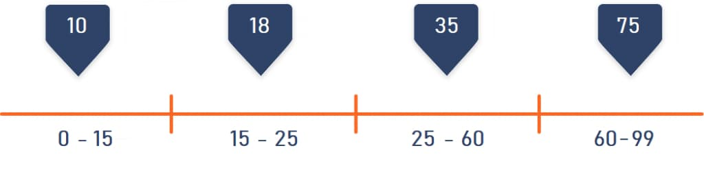
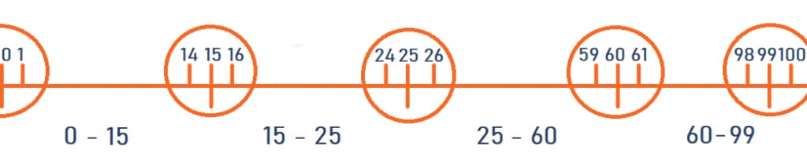
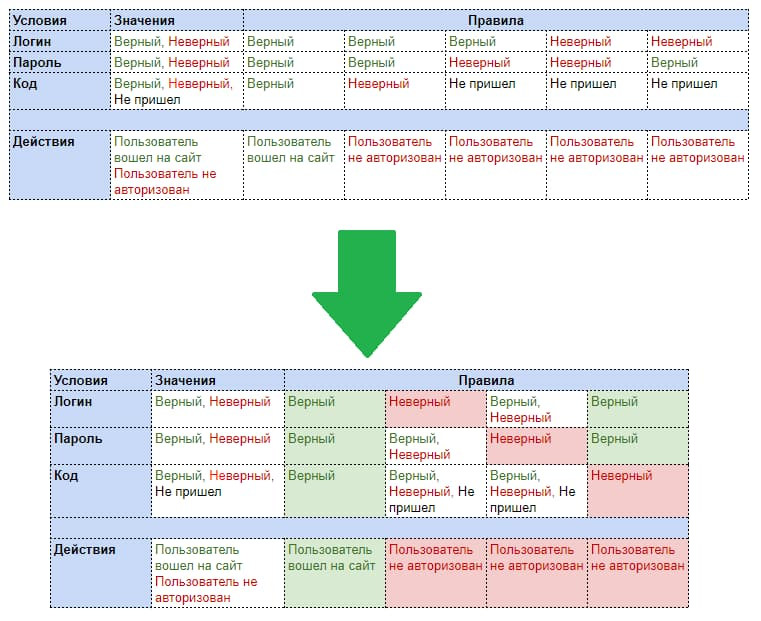
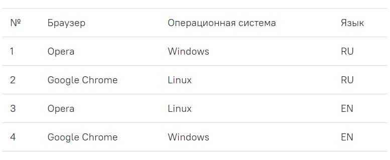
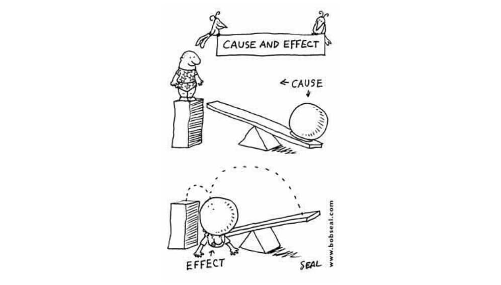

Типы тестирования
Статическое тестирование, как следует из названия, не требует запускать программу или приложение и позволяет находить самые очевидные ошибки еще на ранних этапах создания продукта. Например, частью статического тестирования является проверка параметров ПО на соответствие требованиям технического задания, вычитка кода.
Динамическое тестирование требует проверять ПО в действии. Этот вид, в свою очередь, также делится на две обширные группы:
- Техники белого ящика (они же структурное тестирование) применяют в том случае, если специалист хорошо знает архитектуру продукта, его код, «начинку» – то есть может ориентироваться в самой программе.
- Техники черного ящика позволяют проверять работу продукта, не зная внутреннего устройства системы. При этом тестирование проводится на основе требований, указанных в спецификации проекта или в ТЗ.
- Техники серого ящика позволяют тестировать продукт, когда специалист частично знает его внутреннее устройство. Для выполнения тестирования «серого ящика» не нужен доступ к исходному коду.
Этапы тестирования
1. Подготовка. На этом этапе QA-инженер читает проектную документацию, выясняет требования к продукту, прорабатывает план, продумывает стратегию, расставляет задачи по приоритетности и анализирует возможные риски.
2. Непосредственно тестирование. Предварительно специалисты анализируют собранную ранее информацию, составляют список тестируемых функций, знакомятся с уже известными багами, если они есть, пишут тест-кейсы.
Еще раз подчеркнем: принципиально важно стремиться к минимально возможному числу тестов, при этом необходимо, чтобы сценарии находили наибольшее число высокоприоритетных дефектов.
3. Анализ результатов и составление отчетов. При работе над созданием тестов QA-специалист ориентируется не только на документацию, но и на устные сведения от других QA, аналитиков, разработчиков, менеджеров проекта.
Техники тест-дизайна на примерах
Техники тест-дизайна — это правила и подходы, которые помогают создавать грамотные тест-кейсы. Они помогают нам тестировать, не просто переходя со страницы на страницу, а объясняют, почему мы вводим определенные значения и какие конкретно значения нужно вводить.
И в этой статье мы поговорим про такие техники тест-дизайна:
- Эквивалентное разбиение
- Граничные значения
- Таблица принятия решений
- Попарное тестирование
- Причина и следствие
- Предугадывание ошибок
Эквивалентное разбиение
Метод эквивалентного разбиения позволяет минимизировать число тестов, не создавая сценарий для каждого возможного значения, а выбрав только одно значение из целого класса и приняв за аксиому, что для всех значений в данной группе результат будет аналогичным.
Например, мы тестируем функциональность приложения, позволяющего покупать авиа- и железнодорожные билеты онлайн. Стоимость билета будет зависеть от возраста пассажира, так как дети, студенты и пенсионеры относятся ко льготным категориям.
У нас есть четыре возрастных группы: младше 15 лет, от 15 до 25 лет, старше 25 и младше 60 лет и люди старше 60. При этом, в поле для ввода возраста помещается всего два символа, поэтому указать возраст более 99 лет технически невозможно.
QA-специалисту не нужно писать 99 тестов для каждого возраста, хватит пяти: по одному для каждой возрастной группы (скажем, 10, 18, 35 и 75 лет) и один для случая, если возраст человека превышает 99 лет. Да, последний тест на практике невыполним (поскольку в поле возраста невозможно ввести более двух знаков), и все же не следует забывать об этой проверке.
Граничные значения
Техника граничных значений основана на предположении, что большинство ошибок может возникнуть на границах эквивалентных классов. Она тесно связана с вышеописанной техникой эквивалентного разбиения, из-за чего часто используется с ней в паре. Тогда для примера из предыдущего пункта границами будут являться значения 0, 15, 25, 60 и 99. Граничными значениями будут 0, 1, 14, 15, 16, 24, 25, 26, 59, 60, 61, 98, 99, 100.
Часто сложности возникают, если возрастные категории указаны «внахлест», например, 0-12, 12-25 лет и т.д.
Таблица принятия решений
Другое название метода – матрица принятия решений. Эта техника подходит для более сложных систем, например – двухфакторной аутентификации. Предположим, чтобы войти в систему, пользователю нужно ввести сначала логин и пароль, а затем еще подтвердить свою личность присланным в смс кодом.
Какие возможны сценарии:
- Правильный логин и правильный пароль.
- Правильный логин, неправильный пароль.
- Неправильный логин, правильный пароль.
- Неправильный логин, неправильный пароль.
Первый из этих сценариев сопровождается либо правильным, либо неправильным вводом смс-кода, итого у нас получается 5 тестов. При этом только один из сценариев приведет к положительному результату (пользователь успешно авторизуется), а остальные закончатся неудачей.
Однако, может быть так, что система выдает разные сообщения в зависимости от того, на каком этапе была допущена ошибка, скажем: invalid login, invalid password. Соответственно, групп потребуется больше, а таблица станет обширнее.
Этот метод хорош тем, что он показывает сразу все возможные сценарии в форме, понятной даже неспециалисту.
Пример таблицы принятия решений
Попарное тестирование
Суть этого метода, также известного как pairwise testing, в том, что каждое значение каждого проверяемого параметра должно быть протестировано на взаимодействие с каждым значением всех остальных параметров. После составления такой матрицы мы убираем тесты, которые дублируют друг друга, оставляя максимальное покрытие при минимальном необходимом наборе сценариев.
Попарное тестирование позволяет обнаружить максимум ошибок без избыточных проверок.
Pairwise testing: пример
Для Parwise достаточно, чтобы каждое значение всех параметров хотя бы единожды сочеталось с другими значениями остальных параметров. Таким образом, матрицу можно значительно сократить. Например:
При составлении матрицы принятия решений для двух браузеров, двух ОС и двух языков было бы нужно 8 сценариев. При попарном тестировании достаточно четырех.
Все это можно просчитать и вручную, но не обязательно – гораздо удобнее автоматизировать процесс. Для этого существует программа попарного независимого комбинированного тестирования – Pairwise Independent Combinatorial Testing (PICT). Для проведения тестирования специалист создает текстовый файл с перечислением и их возможных значений, а затем запускает PICT через cmd – командную строку. Скомбинированные тесты отображаются в виде таблицы в самой консоли. Так же результаты по желанию можно выгрузить в файл Excel.
Пример содержимого файла для программы PICT:
- Браузер: Chrome, Opera
- ОС: Windows, Linux
- Язык: RU, ENG
Пример попарного тестирования
Причина и следствие
Простая проверка базовых действий и их результата. Например, если нажать крестик в правом верхнем углу окна (причина), оно закроется (следствие), и т.д. Этот метод позволяет проверить все возможности системы, а также обнаружить баги и улучшить техническую документацию продукта.
Примерный алгоритм использования техники:
- Выделяем причины и следствия в спецификациях.
- Связываем причины и следствия.
- Учитываем «невозможные» сочетания причин и следствий.
- Составляем «таблицу решений», где в каждом столбце указана комбинация входов и выходов, т.е. каждый столбец – это готовый тестовый сценарий.
- Расставляем приоритеты.
Эта техника помогает:
- Определить минимальное количество тестов для нахождения максимума ошибок.
- Выяснить все причины и следствия – таким образом, мы убедимся, что на любые манипуляции с системой у системы будет ответ.
- Найти возможные недочеты в логике описания приложения (что, в свою очередь, поможет улучшить документацию).
Например, QA-специалист тестирует приложение типа “записная книжка”. После ввода всех данных нового контакта и нажатия кнопки Создать (причина) приложение должно автоматически создать карточку с номером телефона, фотографией и ФИО человека (следствие). Тесты покажут, можно ли оставлять одно или несколько полей пустыми, распознает ли система кириллицу, латиницу или оба алфавита, а также другие параметры.
Предугадывание ошибок
Используя свои знания о системе, QA-специалист может «предугадать», при каких входных условиях есть риск ошибок. Для этого важно иметь опыт, хорошо знать продукт и уметь выстроить коммуникации с коллегами.
Например, в спецификации указано, что поле должно принимать код из четырех цифр. В числе возможных тестов:
- Что произойдет, если не ввести код?
- Что произойдет, если не ввести спецсимволы?
- Что произойдет, если ввести не цифры, а другие символы?
- Что произойдет, если ввести не четыре цифры, а другое количество?
Преимущества:
- Эта проверка эффективна в качестве дополнения к другим техникам.
- Выявляет тестовые случаи, которые “никогда не должны случиться”.
Недостатки:
- Техника в значительной степени основана на интуиции.
- Необходим опыт в тестировании подобных систем.
- Малое покрытие тестами.